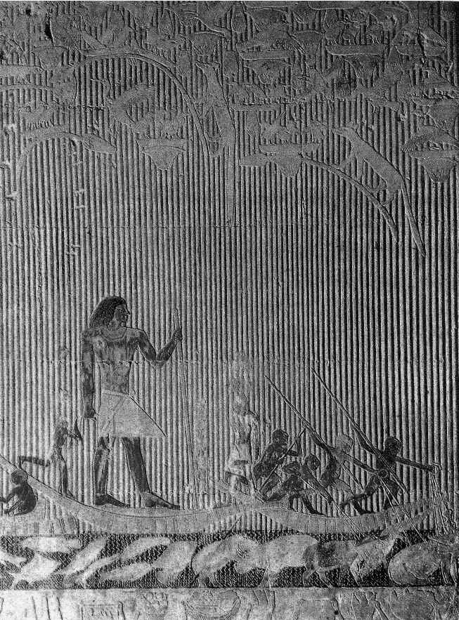

当人类成为食物生产者时，一个无限广阔的崭新世界展现在人类面前；从此，人类告别旧石器时代，跨入新石器时代。
新石器时代的人有两个方面与他们旧石器时代的前辈不同：他们不再是用打制法，而是用磨制法来制作石器；他们的食物来源大半甚至全部是靠栽培植物和畜养动物，而不是靠狩猎或采集获得的。这两方面的变化，以后者更为重要。新石器较旧石器要更锋利、更经久耐用；新石器时代末期的重大发明如犁和轮子，正是由于经过用磨过的石头制成的各种切削器的加工，使用起来才极为便利。但是，把打制成的石斧磨得斧身平滑光亮、斧刃锋利的技艺，与人类由食物采集者变为食物生产者这一转变相比，只能算是一件微不足道的小事。
这一转变不是源于突如其来的灵感，不是由于某些史前时期的阿基米德突然顿悟了农业是怎么回事，高喊一声：“我找到了！”于是这一转变就到来了。确实，早在农业革命之前，人们已普遍知道促使植物生长的方法，就像在哥伦布航海之前人们就已知道地球是圆的一样。现已查实，现代的原始人对农业毫无所知，但对当地植物的特性和生长情况却非常熟悉。他们知道：种子萌芽，长出幼苗；有了水分和阳光，植物才会茂盛；植物在某种土壤中可生长得很好，而在另一种土壤中却不行。这一类知识的获得，对现代原始人来说，是很自然的，因为他们的生存就取决于对周围动植物的实际了解。我们没有理由可怀疑，但有大量证据可相信，史前时期的人类是在与现代原始人相仿的环境下获得有关动植物的知识的。
如果有关植物生长的基本原理早在农业革命之前的数千年前就已为人类所知道，那么，为什么还要推迟如此之久才付诸实践呢？一个原因是，缺乏这样做的动力。靠捕猎为生的原始人在正常情况下过的并不是忍饥挨饿的生活，他们从来不使自己的人口增长超出食物来源所许可的范围。作为游牧群体，他们经常处在迁徙过程中，因此也就不能形成人丁兴旺的大家庭。由于没有畜养的动物来提供牛奶，母亲只能用自己的乳汁来哺育每一个孩子。由于母亲无法同时为两个孩子哺乳，也不能同时带着他们从一个营地转移到另一个营地，所以当一个小孩出生后不久很快又诞生一个小孩时，母亲一般会让后出生的那个小孩死掉。不过在一般情况下，母亲们还是能够避免出现这种杀婴惨剧的，因为哺乳会抑制排卵，所以她们在喂养一个小孩的几年中一般不会怀孕。如果这一计划生育的天然形式失效了，我们的祖先们就会采取杀死新生婴儿、堕胎和停止哺乳等办法来降低自己的人口数，以度过一年中食物来源不足的月份。因而，狩猎社会能在供求平衡的状态下舒舒服服地过上数千年而未生长出一种要求根本变革的推动力。
在正常情况下，靠捕猎为生的原始人不仅有充足的食物，而且还有极为丰富的食物品种。生活在南非的布希曼人提供了这方面一个现代的例子。虽然这些捕猎者生活在环境恶劣的沙漠中，但他们的食物依然包括85种可食用植物和223种动物。因此，他们的日常食物比起农民的日常食物，其所含的维生素、矿物质和蛋白质要多得多，因为农民依靠的只是自己种植的少数几种谷物和块茎。从历史情况看，靠捕猎为生的原始人的食物来源最可靠，因为他们能够从种类繁多的动植物中获取食物。相形之下，农民经常面临挨饿的危险，如果天公不作美导致庄稼歉收的话。
比起种养食物的农民，靠捕猎为生的原始人不但有着更好更可靠的食物来源，而且为获取食物所需劳作的时间也更短。再以生活在环境恶劣的沙漠中的布希曼人为例，他们当中的成年人平均每周仅花15个小时去狩猎和采集食物，也就是说，他们每天只工作两个小时多一点点。这样，我们对他们超常的健康状况也就不会感到惊奇了。事实上，有10%的布希曼人能活过60岁。当然游牧生活也有助于他们的健康，由于他们不断地搬迁，他们能够避免因环境不卫生而染上的疾病；而农民们则相反，在集满了人粪和垃圾的村落中度过一生。
出于上述原因，尽管人类在很早以前就已懂得如何种养食物，但直到1万年前才转向农业。人类推迟很久才转向农业的另一个原因是，可以栽培的植物和可以驯养的动物为数较少。有史以来，人类所能驯化的正好具有某些必不可少的特性的植物只有几百种，动物只有几十种。因为适于栽培的植物必须具有高产的可能性，最好能适应各种各样的环境；如果不具备这些特性，即使加以栽培也收不到什么成效。这就解释了为什么在大约20万种开花植物中，只有约3000种在某种程度上被用作食物。而在这些被用作食物的植物中，也只有不超过30种的植物是主要作物，它们包括4种禾本科植物（小麦、水稻、玉米和甘蔗）、淀粉为主要成分的植物（土豆、番薯、树薯粉和香蕉），以及被称为“穷人的肉类”的豆科植物（扁豆、豌豆、大巢菜、豆角、花生和黄豆）。

图6 猎河马。埃及提伊墓室壁画。
同样，适于驯养的动物必须能失去一见人就逃之夭夭的天性，能在人类的饲养下繁殖，乐意吃人类提供的食物。欧、亚、非三洲的各个民族非常幸运，他们找到了能够提供肉类、牛奶、羊毛，并可作驮畜的各种动物。而美洲印第安人则没有获得类似的动物，所以，他们的发展受到很大的阻碍，他们只好与无峰驼、羊驼和驼马这类产于安第斯山脉、属于偶蹄目骆驼科的半驯化动物打交道。
由上所述，可见如果不发生某种变化来破坏使狩猎社会得以安逸舒适地存在下去的平衡，农业的发生是不可设想的；而且，即使当这种变化到来时，农业也只能发生在那些能找到适于栽培的植物的地区。实际发生的情况正是这样。
在距今1万年前到距今2000年前这段人类发展史上相对短暂的时间里，全世界大部分的人类都转向农业。显然这是一次强制性的转变，因为没有一个靠捕猎为生的原始人会自愿抛弃他那舒适而又可靠的生活方式，去做终日被禁锢在自己的土地或牧场上、无休无止地劳作的农民。迫使人们发生转变的是人口压力。上万年前，人类的数量增长缓慢，但还是造成了非洲、亚洲、大洋洲乃至美洲的人口迁移。最后，除南极洲外的各大洲都住满了人。随着此后人口缓慢但不断的增长，靠捕猎为生的原始人不得不以自己种植的食物来补充采集食物的不足。毫无疑问，他们并不喜欢待在一个地方种庄稼或者养牲畜，但事实是，就每平方英里所能养活的人口而言，农业远远超过了食物采集。
农业首先在少数几个存在可以驯化的动植物的地区成为主业。在这一驯化过程中，野生动植物长得越来越大，从而提供了更多的食物。因此，靠捕猎为生的原始人也就花费越来越多的时间去做食物生产者，而不是食物采集者——最后他们就变成了居住在村庄中的农民。而这种全新的生活方式，也从农业革命最初的几个中心地区逐渐传播到了全球大部分地区。